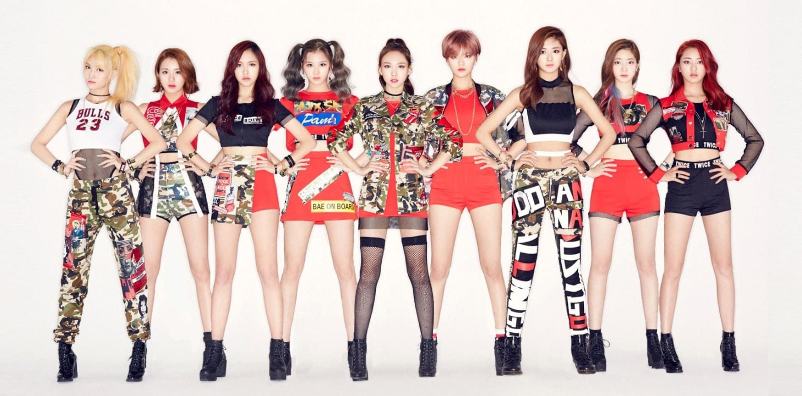

Debut
El programa titulado Sixteen comenzó el 5 de mayo y finalizó con Nayeon, Sana, Dahyun, Chaeyoung, Mina, Jihyo y Jeongyeon como las integrantes oficiales de Twice. Más tarde, JYP Entertainment anunció que agregaría a dos integrantes, a Tzuyu (que no había sido elegida previamente) y a Momo (que había sido eliminada). Tzuyu fue agregada por ser la «elección de la audiencia» porque fue la concursante más popular al final del programa y Momo fue agregada personalmente por J.Y. Park porque sintió que el grupo debía tener las excelentes habilidades de baile de Momo. La elección de Momo se convirtió en una controversia ya que muchas personas protestaban contra el hecho de que las participantes eliminadas podrían haberse unido al grupo. Después de eso, la controversia se desvaneció lentamente. Los representantes de JYP Entertainment declararon que Twice debutaría a finales de 2015. El 10 de julio de 2015, el grupo abrió su cuenta de Instagram con la primera foto de todas las chicas posando como Twice. JYP Entertainment también anunció que iniciaría con Twice TV, un programa web donde cuenta las historias de las integrantes en varias entrevistas, mientras se preparan para su debut. El 7 de octubre de 2015, JYP Entertainment anunció en su página web que Twice debutaría con su primer EP titulado The Story Begins junto con el sencillo principal titulado «Like Ooh Ahh», la cual fue compuesta por Black Eyed Pilseung. El 20 de octubre, el álbum y el videoclip de la canción fueron publicados en línea y a través de V app. El grupo llevó a cabo un showcase el mismo día, donde interpretaron el sencillo, junto con las canciones «I Think I'm Crazy» y «Do It Again». El vídeo musical consiguió 20 millones de visitas dos meses después de su debut. El 2 de diciembre, noticias informaron que Twice había firmado diez contratos por un total de aproximadamente 1.8 billones de wones. Es la mayor cantidad para cualquier grupo novato de chicas después de un mes desde su debut. El 27 de diciembre, el grupo realizó un remix de su canción debut en Gayo Daejun de SBS, fue la primera aparición de Twice en un programa de música de fin de año.